Dum
cooking method
Slow cooking in a sealed pot. The lid goes on tight, so rice, meat and spices steam gently in their own aromas. It’s how dum biryani gets its layers.
Taste it in
Our story · FM 423
One kitchen, four big flavour moods.
Curry District is a whole neighborhood of flavor on FM 423 in Little Elm, and the menu is your map. Here’s the lay of the land.
The menu is your map
Andhra-style fire, North Indian tandoor classics, dum biryani and Indo-Chinese street favourites, all cooked on FM 423. Pick a street and start walking.
Street 01 · Andhra-style fire
Head down one street for Andhra-style fire: Karampodi Chicken with a serious chili-powder kick and Gongura Mutton Pulav, tangy and bold.
Heads-up from guests: even Mild can have a kick. Tell us your heat level.

Street 02 · Tandoor Quarter
Turn the corner for North Indian tandoor classics, glowing hot: Tandoori Chicken, Chicken Tikka Kabab and garlic naan that vanishes faster than you can say ‘bas, ek aur’ (okay, just one more).
Street 03 · Biryani Boulevard
Biryani Boulevard is home to our dum biryani, layered, sealed and steaming.
Lift the lid. Inhale. Repeat.
Street 04 · Indo-Chinese Alley
Down Indo-Chinese Alley, Gobi Manchurian and Chilli Paneer bring the wok-tossed street-food swagger.
And the big one
It basically has its own zip code.
Bring the family after practice, grab pickup on the way home or let us feed the whole party. Tell us your heat level. We’ll handle the swaad (the taste).
Say it like a regular
Six words you’ll spot on the District menu, and what they mean on your plate.
cooking method
Slow cooking in a sealed pot. The lid goes on tight, so rice, meat and spices steam gently in their own aromas. It’s how dum biryani gets its layers.
Taste it in
the clay oven
A clay oven fired to blistering heat. Marinated meats char on skewers inside, and naan is slapped onto the hot inner wall to puff and blister.
Taste it in
the finishing sizzle
Tempering: whole spices, garlic or chillies sizzled in hot oil or ghee, then poured over a dish to finish it. That last-second crackle wakes up a dal.
Taste it in
spice mix
Simply, a blend of spices, whole or ground. On a menu it also means a dish cooked in a spiced sauce, like tikka masala.
Taste it in
sorrel leaves
Sorrel leaves with a bright, sour tang, a favourite in Andhra-style cooking. They bring a lip-puckering zing to rice and meat dishes.
Taste it in
spice powder
Karam means chilli heat and podi means powder: a coarse, fiery spice powder built on dried red chillies. Tossed over chicken, it’s pure Andhra-style fire.
Taste it in
Simple kitchen definitions to help you order. Recipes vary from kitchen to kitchen, so ask us how we make it.
Word on the street
Ratings as listed publicly in October 2026, plus the themes that come up again and again.
The gist from public reviews: paraphrased, never invented.
The biryani and pulav, by a mile, with extra love for the family-size pulav packs: big flavor, big portions, good value.
Butter Chicken: creamy, rich and a delivery-app go-to.
Garlic naan, ordered alongside just about every curry.
Generous portions that feel like real value.
A friendly, accommodating team that’s happy to recommend a dish.
Spice cooked to the level you ask for. Heads-up: some guests say even Mild has a kick.
Tandoor favorites like chicken tikka kebab (it brings the heat) and tandoori chicken.
A clean, cozy room with Indian music in the background.
Themes are paraphrased from public review summaries. They are not direct quotes. Ratings as listed publicly in Oct 2026; they change over time, so check each platform for the latest. The Google figure is approximate.
Sample copy — to be replaced with your real story
From our kitchen to yours
Hi, neighbours! We’re [owner names], the family behind Curry District.
Our recipes come from [where the dishes come from: a home kitchen, a city, a well-thumbed notebook]. The first dish we ever got just right was [signature dish], and it’s still the one we cook for our own family.
We opened on FM 423 in [year] because [why Little Elm, why then]. [Who is in the kitchen today, and the one thing you want every guest to feel when they walk in.]
— [your names]
Sample copy for the design proposal. Every highlighted slot is a placeholder for the owners’ own words; nothing in this block is a fact about Curry District yet.